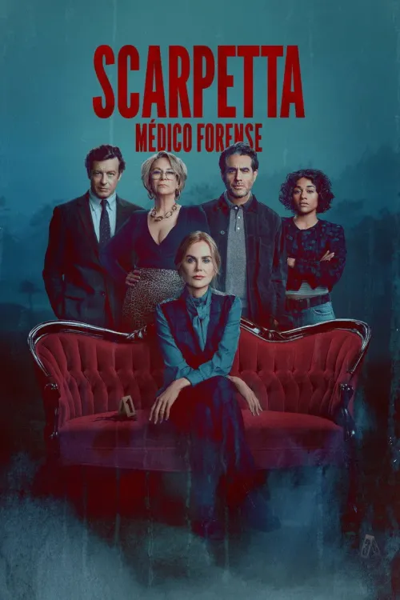
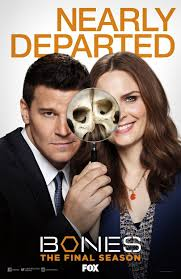
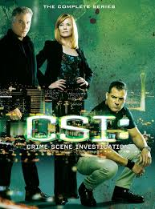
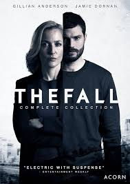

SCARPETTA
La prestigiosa patóloga Kay Scarpetta vuelve a su cargo de jefa médica forense
de Virginia para investigar un inquietante asesinato que le recuerda a su primer
gran caso de hace décadas.
- Género: Crimen, Drama, Misterio y Suspense
- Año: 2026
- Duración: 1 temporada
- Director: David Gordon Green, Charlotte Brändström y Ellen Kuras
- Productores/as: John H. Brister y Michael Lohmann
- Calificación general: 6.0/10
- Clasificación por edad: +18
- Plataformas:Prime Video
Tráiler
REPARTO
NICOLE KIDMAN
SIMON BAKER
JAMIE LEE CURTIS
BOBBY CANNAVALE
ROSY MCEWEN
RESEÑAS DESTACADAS
Calificación: 9.0 / 10
ThrillerFan92 dice:
Un inicio prometedor y atrapante.
"La serie logra capturar la esencia de las novelas de Patricia Cornwell.
La ambientación forense es impecable y Nicole Kidman transmite con fuerza
la complejidad de Kay Scarpetta. Un thriller que engancha desde el primer episodio."
Calificación: 7.0 / 10
CrimeCritic21 dice:
Entretenida, pero algo convencional.
"La trama es interesante, aunque algunos episodios caen en clichés
típicos de series policiales. Aun así, la química entre Kidman y Jamie Lee Curtis
aporta frescura y mantiene el interés."
Calificación: 8.0 / 10
MysteryAddict dice:
Un thriller forense con estilo.
"Lo que más me gustó fue cómo la serie muestra el trabajo forense
con detalle y realismo. La tensión se mantiene y el desarrollo de Scarpetta
como personaje es convincente."
Calificación: 7.5 / 10
CineGeek dice:
Gran ambientación, pero ritmo irregular.
"La atmósfera oscura y los escenarios son espectaculares, transmiten
la tensión del género policial. Sin embargo, el ritmo narrativo decae
en algunos capítulos. El final compensa con un clímax emocionante."
Calificación: 6.5 / 10
DetectiveFan dice:
Un inicio interesante, pero irregular.
"El carisma de Nicole Kidman sostiene la serie, pero la trama principal
se siente algo floja y repetitiva. Los detalles forenses son buenos, aunque
esperaba mayor intensidad en los casos. Aun así, es disfrutable para los fans del género."
RELACIONADOS

BONES
Calificación: 7.8/10
DURACION: 12 temporadas

CSI: CRIME SCENE INVESTIGATION
Calificación: 7.7/10
DURACION: 15 temporadas
MINDHUNTER
Calificación: 8.6/10
DURACION: 2 temporadas
HANNIBAL
Calificación: 8.5/10
DURACION: 3 temporadas
